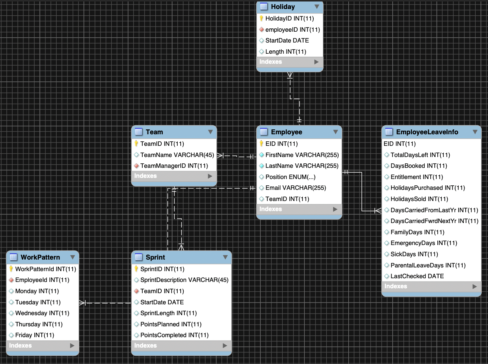
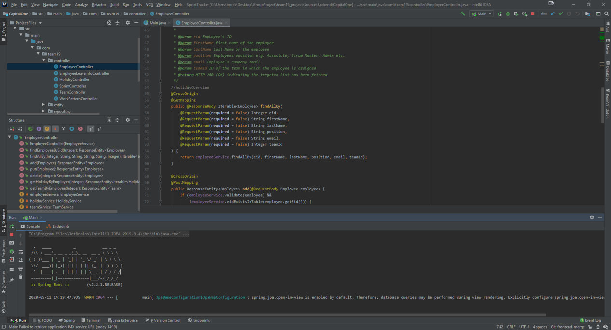
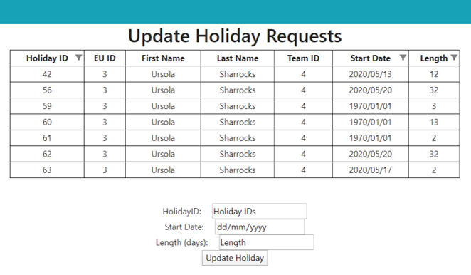

During my second year at university, we had to participate in a group project. After meeting our randomly assigned groups, we had to decide which projects we wanted to apply for including whether we wanted to work with an internal sponsor or and external sponsor. The project we selected and got the chance to work on was a Sprint Capacity Tracker with Capital One.
We developed a complete system formed of a database, backend and front end. The end result was a web application that communicated throughout all the parts of the system.
The databse was hosed on an AWS server. We designed the database to meet the requirements for the company. They didn't provide any data due to GDPR reasons so not only did we have to develop the database but we also had to find a way to generate the data. We did this using a service called Mokaroo which allowed us to generate randomised data based upon some requirements that we entered before generating. We used MySQL workbench to connect to the database and amend the database from there. We imported the .csv files generated by Mockaroo into the database.
In order to communicate wbetween the backend and the database we used the Hibernate frame work to allow us to map the database to an object oriented language such as java. In the backend we used the Spring Boot framework inorder to create a micro service approach to the solution. To test the functions in the backend we used the Mokito framework. THis allowed us to create mock objects so that functions could be run independently without the whole system being used.
In the front end we used many APIs in order to display the data in the useful formats. The most used was the react-table-filter API as we found tables were very useful to display the data efficiently. As well as this we used the RESTful API and JSON files to use HTTP request to communicate with the back end.
Our group made a prediction model which used machine learning techniques to predict when people would be taking their holidays off.
We had to generate our own data again which was the first step in making the model. To generate holiday data, we created personas to represent real world use cases. For instance, persona A would take around 20 to 30 days off, and 50% of the days would be generated according to assumptions. To avoid people with the same persona picking the same dates over and over, the dates were picked according to normal distribution with the mean being the date and the standard deviation 7 so that people with the same persona would likely to have a similar holiday pattern, but it would not be identical.
We used Time Series Forecasting to predict the holidays. We used a mock data set for 5 years inorder to train the data. The final model was able to loosely “learn” the concept of seasonal holidays such that it predicts the holiday trends with a fair amount of accuracy as can be seen below:
The blue line represents the actual number of days taken by that employee during week x, while the orange line represents the model’s prediction.